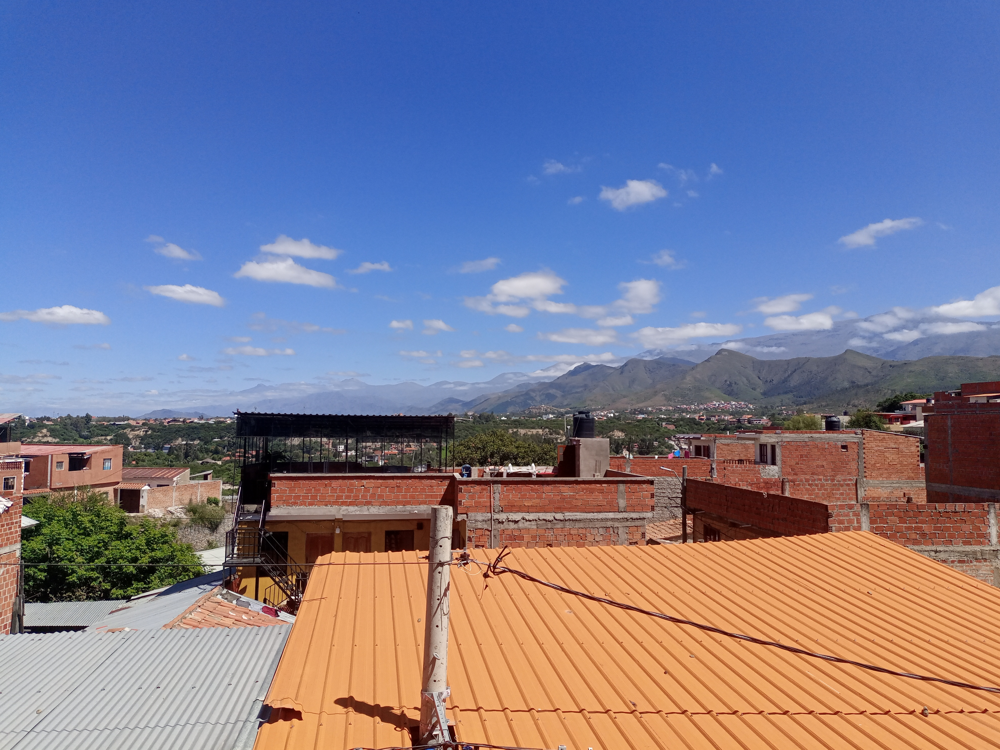

1.-bueno aqui me gustaria contarte como fue mi primer viaje jsjs, yo viaje a tarija al congreso de
universidades y la primera ves que viajaba tan lejos y solo asi que al prinsipio estaba un poco nerviso
pero bueno al final lo hice, cuando llegue paso el primer problema jsjs tenia sigue 17 y para alquilar
un cuarto tenia que ser minimamente mayor de edad jsjsj asi que apenas encontre un cuarto y eso con
sobreprecio y re pequeño ;(.
2.-Asi paso mi primer dia buscando donde quedarme jsjv y llego el segundo dia desidi conocer el lugar y
visitar todos los lugares posibles y asi lo hice aunque solo era mayoria ciudad me diverti mucho aunque
estaba solito pues no conocia a nadie y asi paso mi mañana, ya en la tarde me aliste para la primera
actividad del congreso...

3.-Asi callo la noche y despues de asistir a todos los seminarios dentro de la universidad publica del
lugar, me dispuse a ir a mi primer concierto... realmente no sabia ni quien vendria solo fui para
aprovechar que tenia entrada gratis jsjs y bueno llegue pero no conocia a nadie hasta que vi a mi
auxiliar de la upea, si hay tambien estaban los de mi otra carrera y me fui con ellos eran puro
auxiliares y pues estaba gracioso despues compraron un trago y fue la primera ves que tome, en mi mente
estaba que no debia perderme asi que cuando senti que ya estaba mareado, sali de ahi habia afuera una
bosque lindo con luces y pues me heche y me quede ahi a esperar a que se me pase despues vi como los
auxi de la upea ya estaban re mal y me alegre de que me aleje de ellos antes de estar asi, pero me
sentia solo queria hablar con alguien o lo que sea pero no estaba solo me senti triste y cuando me paso
me fui a mi cuarto, ya era media noche cuando llegue a mi alojamiento, esa noche le llame a mi amiga me
respondio y me acompaño, se rio cuando le dije que era mi primera ves tomando y solo me dijo que estaba
bien y que cuando vuelva a la paz iriamos a una disco a compartir los 2...
4.-Al despertar ya habia colgado y pues me sentia feliz un poco pense que tomar estaba normal jsjsj error
mio, pero bueno al dia siguiente fui otra ves a los seminarios y de paso a probar algunas comidas que me
alcanze esstaba caminando casi todo el dia con mis lentes que tenian musica realmente me gustaba esos
lentes podia escuchar musica y eran lentes jsjjs bueno asi paso mi sengudo dia en tarija o no?...
5.-Pues si ese dia habia una disco era la segunda actividad del congreso pero no fui realmente pense que
seria como el dia anterior e iba a estar solo asi que no fui me quede escuchando musica y hablando con
mi amiga la cual me dijo que ubiera ido y que me arrepentiria, pero bueno para mi fue un buen dia. Al
dia siguiente fui a la cata de vinos con 2 amigos que me pude hacer en el bus, los encontre y bueno
fuimos los 3 mas su enamorada de uno era gracioso ahi me compre esos chocolates que tenian pasas con ron
estaban ricos y no senti nada de ron creo jsjs.
6.-Ya para volver me saque esta foto como el ultimo dia de esta locura de viaje jsjjs me diverti mucho y
mas por que al volver me fui con mis 2 amigos nos preguntamos muchas cosas y de ahi llegamos a si yo
estaba solo o con pareja, esa fue la primera ves que me senti mal por que les dije que estaba solo...
pero se sintio diferente por que te recorde y recorde que no podria contarte nada de esto que no tenia a
nadie a quien contarle y me senti mal les conte como habiamos terminado y todo lo que pasamos dijeron
que probablemente era muy inmaduro y fue por eso que decidi no volver, ahi me puse a pensar realmente
que paso y esa noche no pude dormir...